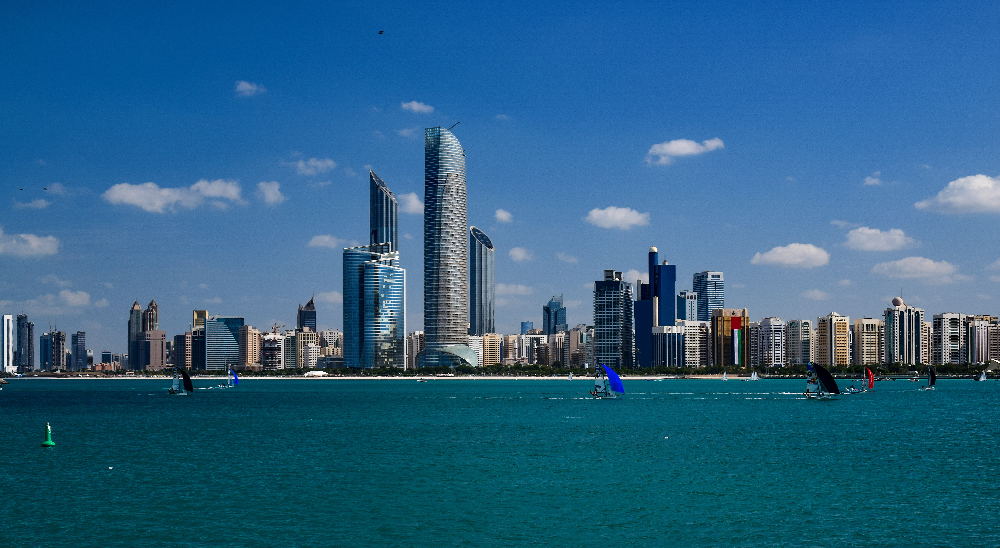

Abu Dhabi with Kids: A Six-Day Family Itinerary
One Abu Dhabi base, one meaningful anchor per day, protected recovery windows and a route that respects heat, energy and live-check boundaries.

Checked before you commit
This illustrative route keeps six nights in one Abu Dhabi base so the family is not repacking between city, island and desert experiences.
Two adults with children or a multigenerational group; early starts, a midday indoor/recovery window and one major anchor rather than an attraction marathon.
City and Saadiyat first, mangrove and heritage next, then a protected desert option before a low-pressure final day. Exact transfer times require a live check.
Check current opening hours, tickets, weather, road conditions, dress/access rules, transport and supplier cancellation terms. A booking link does not prove a booking.
Planning assumption: dates are illustrative; availability, prices, operating hours and provider terms are unknown until checked at decision time.
Route and base decision
Use one Abu Dhabi base for all six nights, with a central or island location chosen after checking the family’s preferred beach, museum and transport trade-offs. Keep the hardest outdoor or transfer-dependent experiences away from arrival and departure. If heat or fatigue rises, remove the optional second stop, not the recovery window.
Day 1 — Land softly on the Corniche
After arrival and luggage, allow the first afternoon for check-in and a short walk along the Corniche near sunset, rather than crossing the city for a headline attraction. Keep dinner close to the base and set the next day’s museum start only after checking opening times.
Fallback: If arrival is late or bags are delayed, make this a hotel recovery evening; do not borrow time from Day 2.
Day 2 — Sheikh Zayed Grand Mosque with a protected reset
Start with Sheikh Zayed Grand Mosque in the morning, allowing time for entry and respectful clothing rather than treating it as a quick photo stop. Return for lunch and a shaded or indoor reset before a short evening waterfront walk.
Fallback: If access rules, heat or family energy make the visit unsuitable, switch to an indoor cultural stop after confirming its current hours; do not claim either option is available without checking.
Day 3 — Saadiyat culture, one museum not three
Use Saadiyat Island for one museum visit, with the Louvre Abu Dhabi as the illustrative anchor, then pause for lunch before a short waterfront or hotel-pool window. The decision is to protect attention: one substantial collection is better than stacking museums.
Fallback: If tickets, access or attention span fail, keep the island geography but replace the museum with an outdoor-to-indoor family block after checking heat and opening conditions.
Day 4 — Mangrove calm before the desert option
Plan a morning mangrove experience or boardwalk near the city, with a named operator and route selected only after checking age, weather, tide and equipment requirements. Return for a long lunch and leave the late afternoon unscheduled.
Fallback: If water conditions or heat rule out the activity, use a shaded nature or indoor alternative and preserve the evening rest; do not assume a replacement tour is operating.
Day 5 — Protected desert day, not a rushed add-on
Use this as the route’s most transfer-dependent day: select one desert experience outside the city, allow a generous return buffer and confirm vehicle, child-seat, meal, cancellation and sunset details directly with the provider. Keep the morning unhurried and the evening empty.
Fallback: If weather, road conditions, family energy or provider terms do not work, stay in Abu Dhabi and use a beach or indoor cultural half-day after a live check.
Day 6 — Yas Island choice with departure protection
Choose one Yas Island anchor—such as a family-friendly park or a short waterfront visit—only if the next day’s departure window allows it. Keep lunch and transport practical, then return to the base with time for packing and a final shared meal.
Fallback: If departure is early or tickets are unavailable, make this a nearby breakfast, packing and Corniche evening; the route succeeds when the family leaves rested, not when every attraction is ticked.
Planning notes
Keep the route editable. Recheck current schedules, tickets, opening hours, weather, accessibility, baggage rules, prices, cancellation terms, road conditions and supplier availability at decision time. Confirm cultural-site access requirements and child suitability directly with the relevant provider. A booking-hub link indicates intent only; it does not prove that a booking occurred.
Build the full plan in Alfred
Generate, validate and edit the complete itinerary in the Alfred app.
Plan a trip